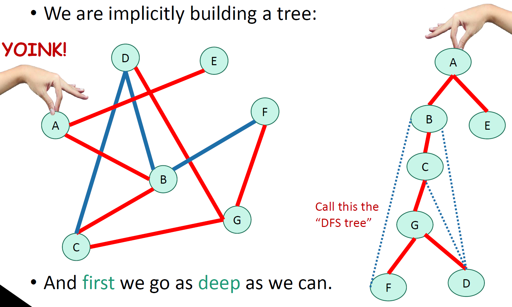

Algorithms week 7
Graph algorithms
- Graph basics
- DFS - depth-first search
- BFS - breadth-first search
- Shortest path finding
- more graphs with advanced graph algorithms
Graph

Undirected graphs
Directed graph
How do we represent graphs?
adjacency matrix
linked lists
In either case
trade-offs
linked lists - generally better for sparse graphs
Depth-first search
DFS vs. BFS

DFS finds all the nodes reachable from the starting point
Why is it called depth-first?
